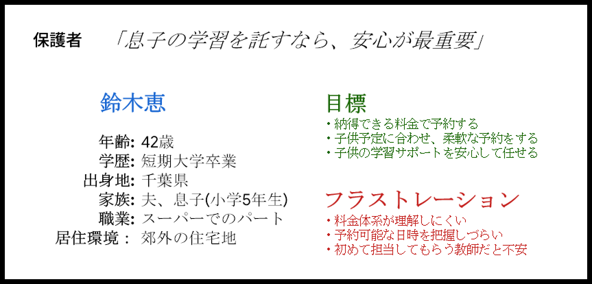
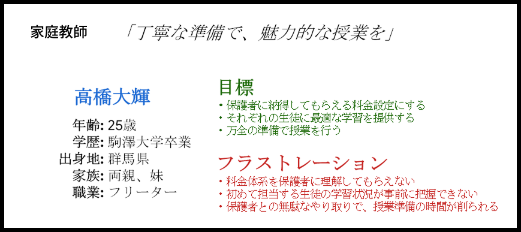
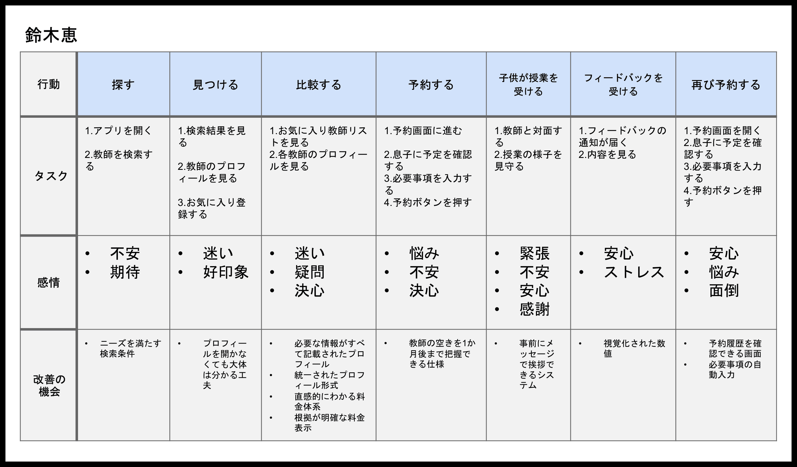
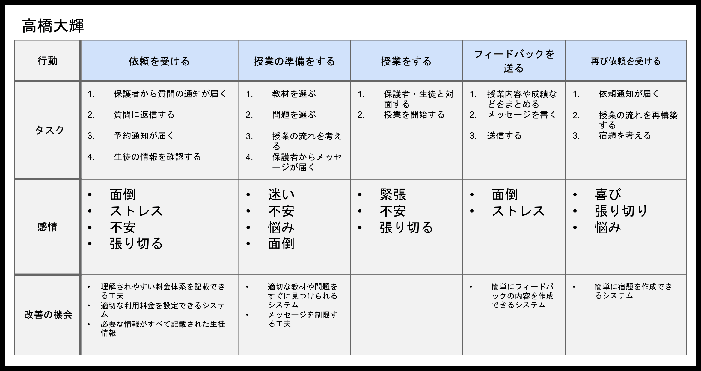
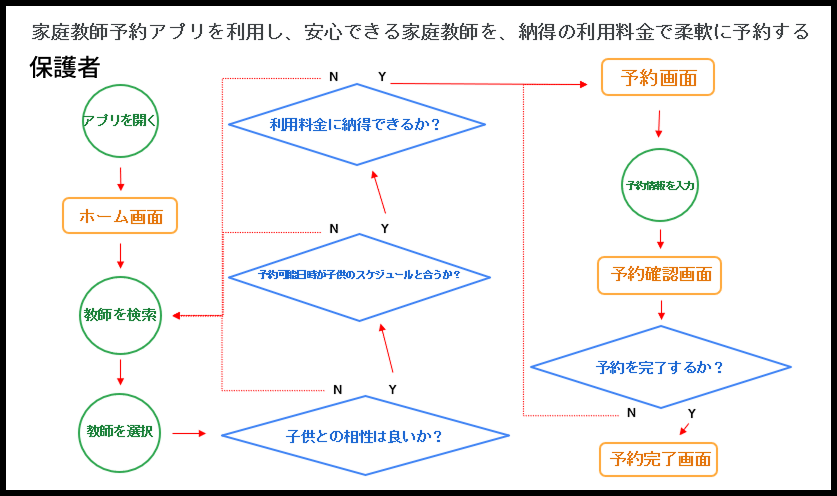
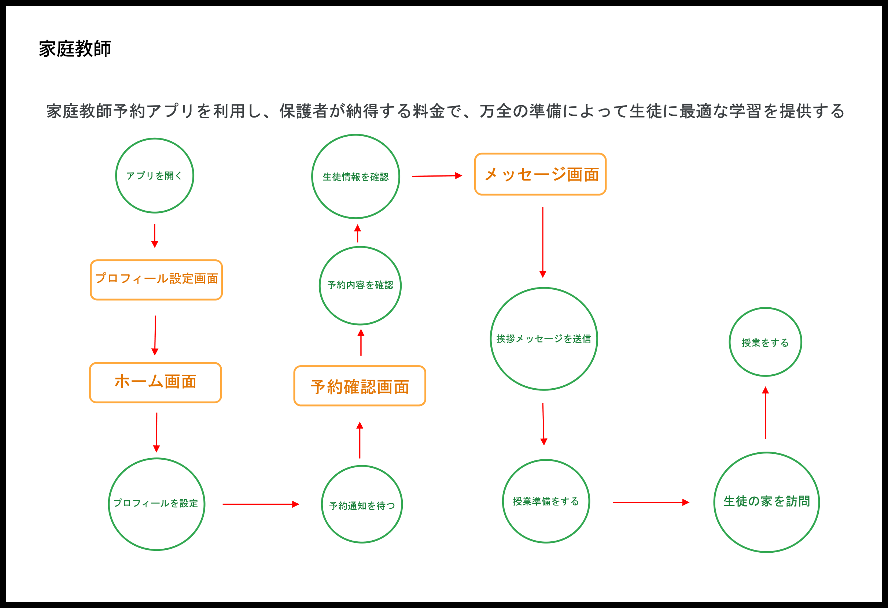
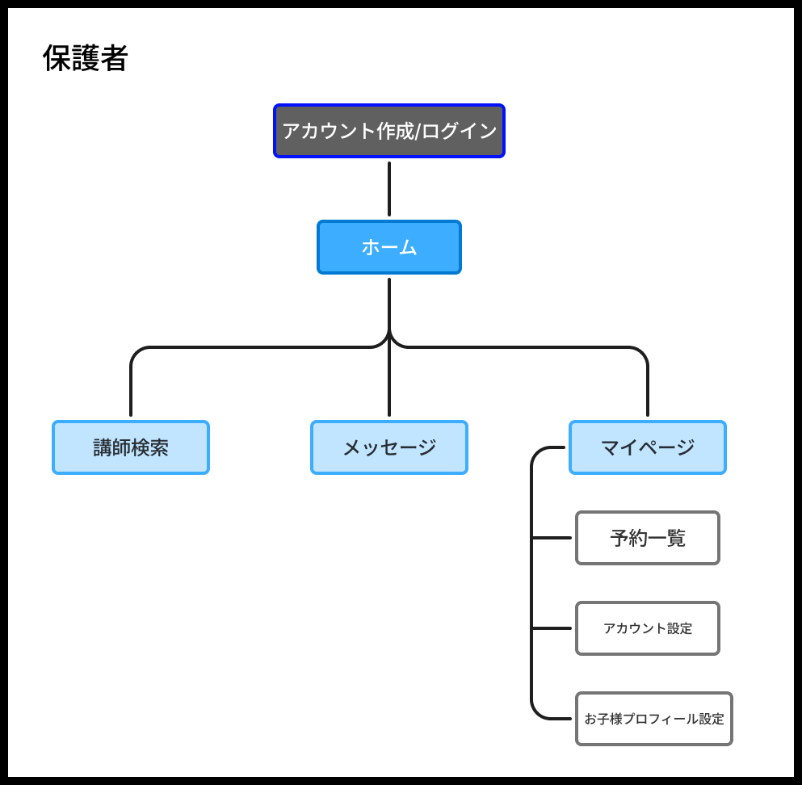
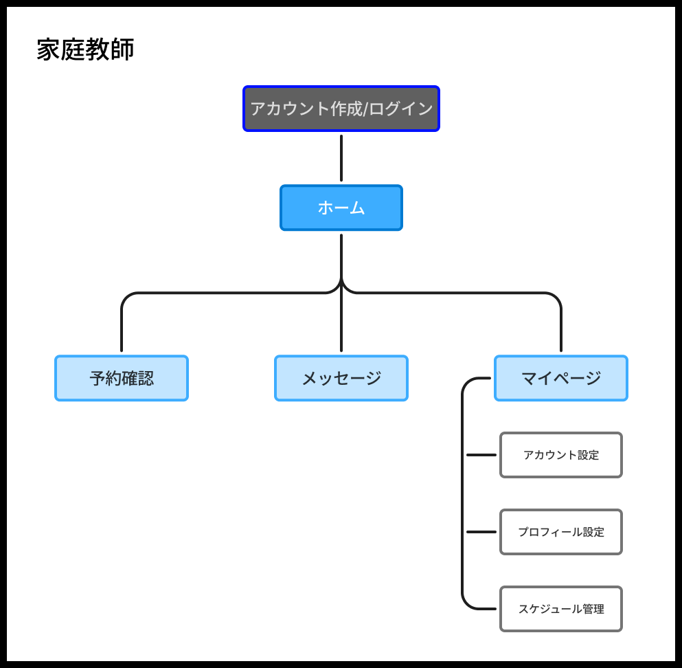

保護者と家庭教師の両方に寄り添う
家庭教師予約アプリ
現在、Google UX designプロフェッショナル認定のプログラムを通して、個人でデザインしているアプリです。保護者ユーザーと家庭教師ユーザーの両方に向けてデザインしています。
使用ツール
 Figma
Figma

目的
UXデザインの学習として制作するため、自分が普段利用しないアプリを制作する方が学習効果が高いと考え、家庭教師予約アプリを制作することに決めました。家庭教師が生徒に最適な学習を提供し、保護者が家庭教師を安心して予約できるアプリのデザインを目的としています。
デザインプロセス
1.ユーザー理解
ユーザーインタビュー
ユーザーインタビューは、協力者を募ることが難しかったため、生成AIによってシミュレーションを行いました。方法としては、年齢と性別、条件をプロンプトとして入力し、ユーザーとして振舞うように指示をしました。その後は本来のユーザーインタビューと同様の手順でインタビューを行いました。
家庭教師と保護者でそれぞれ3人ずつ、家庭教師の予約に関するインタビューを行い、以下のような回答を得ました。
保護者
- 料金体系が理解しにくい
- 予約可能な日時を把握しづらい
- 初めて担当してもらう教師だと不安
家庭教師
- 料金体系を保護者に理解してもらえない
- 初めて担当する生徒の学習状況が事前に把握できない
- 保護者との無駄なやり取りで、授業準備の時間が削られる
ペルソナ


ユーザーストーリー
鈴木恵
仕事と家事を両立する母親として、子供の家庭教師を納得できる料金で柔軟に予約したい。なぜなら、安心できる教師に子供のやる気を引き出してほしいからだ。
高橋大輝
フリーターをしている独身の家庭教師として、保護者が納得する料金で、万全の準備によって生徒に最適な学習を提供したい。なぜなら、保護者と生徒に信頼される教師でありたいからだ。
ユーザージャーニーマップ


ゴールステートメント
以上を踏まえ、ゴールステートメントを作成しました。
保護者
家庭教師予約アプリはユーザーに対して、安心できる家庭教師を納得の利用料金で柔軟に予約する体験を提供する。また、ユーザーが子供と相性が良い教師を見つけることで、子供の学習意欲を向上させる。
家庭教師
家庭教師予約アプリはユーザーに対して、保護者が納得する料金で、万全の準備によって生徒に最適な学習を提供できるアプリ体験を提供する。また、ユーザーが保護者と生徒の両者にとって魅力的な授業を行うことで、教師としての信頼性を維持する。
2.情報設計
How Might We
-
どうすれば、「理解しにくい」料金体系を、「シンプルな」料金体系に変えられるか
家庭教師に料金体系を設定させない
-
どうすれば、家庭教師が1か月後までの空いている日時を設定できるか
家庭教師にインセンティブを提示することで、ナッジを適用する
-
どうすれば、保護者が無駄なメッセージを送らずに済むか
保護者が得たい情報を事前に提供する
-
どうすれば、家庭教師が子供との相性に関する情報をプロフィールに設定できるか
家庭教師にプロフィールの例を提示する
-
どうすれば、保護者が生徒の学習状況に関する情報を送信するか
保護者に子供の学習状況に関する情報のテンプレートを提供する
ユーザーフロー


サイトマップ


ユーザー理解の段階で得た情報をもとに、最適な情報設計を考えました。デザイン思考のプロセスではHMWを用い、幅広いアイデアの創出を意識しています。ユーザーフローとサイトマップではユーザーを迷わせないために、無駄を省いて本当に必要としている機能に絞っています。